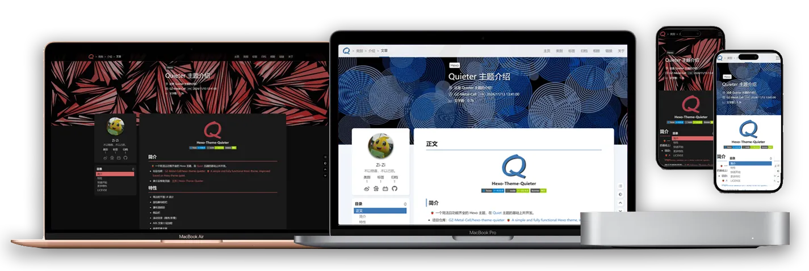

Hexo-Theme-Quieter

简介
🍓 一个简洁且功能齐全的 Hexo 主题，在 Quiet 主题的基础上所开发。
演示及帮助页面：主页 | Hexo-Theme-Quieter
特性
- 简洁的平面 UI 设计
- 面包糠导航栏
- 瀑布流相册
- 侧边栏
- 滚动目录（顺序/折叠）
- AES 文章片段加密
- 昼夜切换主题
- 数学公式（Mathjax/Katex）
- 评论系统（giscus/Gitalk）
- 代码块工具
- 字数统计
- 文章置顶
- 自定义封面样式
- 多种 tag 语法支持
- busuanzi 统计
- 百度统计
- fancybox
- 页面打印布局
- ……
多种插件适配优化：
文章加密
hexo-blog-encrypt：D0n9X1n/hexo-blog-encrypt: Yet, just another hexo plugin for security.本地搜索
hexo-generator-search：wzpan/hexo-generator-search: A plugin to generate search data for Hexo.- Mermaid 图表
hexo-filter-mermaid-diagrams：webappdevelp/hexo-filter-mermaid-diagrams: mermaid diagrams for hexo APlayer 播放器
hexo-tag-aplayer：MoePlayer/hexo-tag-aplayer: Embed aplayer in Hexo posts/pages懒加载
hexo-lazyload-image：Troy-Yang/hexo-lazyload-image: lazyload image plugin for Hexo.文章隐藏
hexo-hide-posts：prinsss/hexo-hide-posts: A plugin to hide specific posts from your Hexo blog and make them only accessible by links. (隐藏 Hexo 文章)- ……
快速开始
可以直接通过 处下载得到空的模板文件，也可以选择手动安装：
下载主题
使用 git 安装（推荐），在 hexo 项目的根目录下：
|
或使用 npm 安装（通过 npm 安装并不会在 themes 里生成主题文件夹，而是在 node_modules 里生成）：
|
配置
修改 Hexo 根目录下的 _config.yml：
- 把主题改为
Quieter：
|
- 设置代码高亮：
|
- 设置每页显示的文章数量为 9 篇（可选）：
|
|
安装依赖
通过以下命令安装主题所需要的包：
|
将渲染引擎切换成 hexo-renderer-kramed：
|
初始化页面布局
主题下的 _config.yml 设定了导航栏显示的文章类型：
|
如果不需要显示某种类别的链接，简便的方法是将这一行删去（或注释掉）。
在 source/ 文件夹下应配置好相应的文章。
类别页
在 source/ 文件夹下创建文件夹及文件 categories/index.md，修改其内容：
|
标签页
在 source/ 文件夹下创建文件夹及文件 tags/index.md，修改其内容：
|
友情链接页
在 source/ 文件夹下创建文件夹及文件 links/index.md，修改其内容（下面是一个友情链接的范例）：
|
相册页
具体的配置见帮助文档：相册页的配置 | Hexo-Theme-Quiter
关于页
在 source/ 文件夹下创建文件夹及文件 about/index.md，修改其内容（下面是一个关于页的范例）：
|
404
在 source/ 文件夹下创建文件 404.md，修改其内容（下面是一个 404 页的范例）：
|
评论功能
主题支持 gisus 和 Gitalk 两种评论系统（只可应用一个）。
gisus（推荐）
从 giscus 得到相应的参数，之后在主题文件夹下的 Quieter/_config.yml 下配置：
|
Gitalk
从 gitalk/gitalk: Gitalk is a modern comment component based on Github Issue and Preact. 处得到相应的参数，之后在主题文件夹下的 Quieter/_config.yml 下配置：
|
更多特性
可从 主页 | Hexo-Theme-Quieter 获得更多帮助和配置文档。
LICENSE
MIT